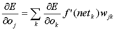

To overcome the limitations of the classical gradient descent technique, many variations on the back-prop algorithm have been proposed. Some of the most well known are Quickprop, SuperSAB and RProp. All this methods present a reduction on the number of iterations needed to complete the task, as opposed to plain back-propagation, and manage to succeed in tasks where plain backprop fails. The most effective approaches use adaptive techniques, to correct the algorithm as the training proceeds. While backprop was originally a non-evolving gradient descent technique, where all customizing was decided at the beginning and then left unchanged during the training, this made it rather stiff when dealing with situations that required a more refined treatment. Consequently, adaptive methods that dynamically corrected the learning parameters (for instance the learning rate, the neurons activation thresholds, or the error derivative size, among others), started to emerge. One of my favorites is RProp, due to its simplicity, and powerful results.
As you recall, backpropagation tries to minimize the error gradient, by correcting the network weights, over consecutive iterations. At each iteration, the weight correction leaps the gradient to another value, which might close down to a minimum that solves the problem, but can also leap over the minimum, if the leap size is too big (due to the size of the error derivative being too big), and miss the solution.
To solve this problem, Martin Riedmiller proposed an adaptive method, where at each iteration, only the gradient sign is taken into account to determine the direction in which the network should evolve. Furthermore, each individual weight change amount is determined dynamically, and changes as a result of the learning process. Notice that the weight change amount, is independent of the gradient value, which is only used to calculate the direction of change for that weight.
I wont discuss the intricacies of the algorithm here (its rather simple, and you can get a describing paper from Riedmiller himself through the links section), but in words, what's being done is this: at each iteration, after all patterns have been presented to the net, and the error gradient for each weight has been computed, we compare each weight's gradient, with the preceding (from the previous iteration) gradient. If the derivative has changed its sign, then this means the minimum was leaped over, due to a too big step, so we must go back to the last iteration and try again with a smaller step. If on the contrary, the derivative has not changed its sign, then this means the algorithm is going down the hill, and the weight change amount should be increased, to speed up convergence.
Now, we'll be focusing on the gradient calculation code. In the backprop section we used a delta variable, since we didnt need separate dE/do and dE/dw values. For RProp we'll be needing the dE/dw values, which in turn need dE/do to be calculated, so we must compute them separately into their own arrays that you'll see below. We will also need another array for each weight's current increment value, as well as another for each weight's previous gradient value.
From now on we'll be considering a network with a single hidden layer. This may seem restrictive, but I think its a reasonable compromise, between network performance and processing time. Besides, most conventional functions do not need any extra hidden layers, so we'll be prepared for most problems.
Lets use the formulas for the calculation of the partial error derivatives, to write the gradient determination code (using informal C style). We'll focus on the procedure for a single pattern, not forgetting this process must be repeated for all patterns in an epoch.
Constants:
These determine the network topology,
INSIZE
number of input cells
HIDSIZE
number of hidden cells
OUTSIZE
number of output cells
Arrays:
These are the array variables we'll be needing to store the network values,
a[L][I]
activation of cell I in layer L
w[L][I][J]
weight of connection between cell I in layer L-1 (preceding layer) to cell J in layer L
dedo[L][I]
dE/do for cell I in layer L
dedw[L][I][J]
dE/dw for weight of connection between cell I in layer L-1 to cell J in layer L
input[I]
value number I of input pattern
target[I]
value number I of target pattern
For simplicity, in this code skeleton, the layer index will be 'HID' when referring to the hidden layer, and 'OUT' when referring to the output layer. Since we'll be using the zak system later on, and also for clarity, all array values will be placed in local variables prior to computing result values.
One final remark, since the activation function is considered sigmoid, all the f'(net) terms will resolve to out(1-out).
Compute Gradient for output layer
for(k=0; k<OUTSIZE; ++k) {
tk = target[k]
ok = a[OUT][k]
dedo[OUT][k] = -(tk-ok)
for(j=0; j<HIDSIZE; ++j) {
dedok = dedo[OUT][k]
outk = a[OUT][k]
oj = a[HID][j]
dedw[OUT][j][k] += dedok*(outk*(1-outk))*oj
}
}
Compute Gradient for hidden layer
for(i=0; i<INSIZE; i++) {
for(j=0; j<HIDSIZE; j++) {
bp = 0

for(k=0; k<OUTSIZE; ++k) {
dedok = dedo[OUT][k]
wjk = w[OUT][j][k]
outk = a[OUT][k]
bp += dedok*(outk*(1-outk))*wjk
}
dedo[HID][j] = bp
outj = a[HID][j]
oi = input[i]
dedoj = dedo[HID][j]
dedw[HID][i][j] += dedoj*(outj*(1-outj))*oi
}
}
So, after this is done, the accumulated error gradient for this last pattern, is placed in the dedw array. We are now ready to transport this algorithm to Csound language, and apply the RProp weight correction scheme. That's what we'll do in the next section.
Previous : Testing back-prop with the XOR problem
Up: Back to index